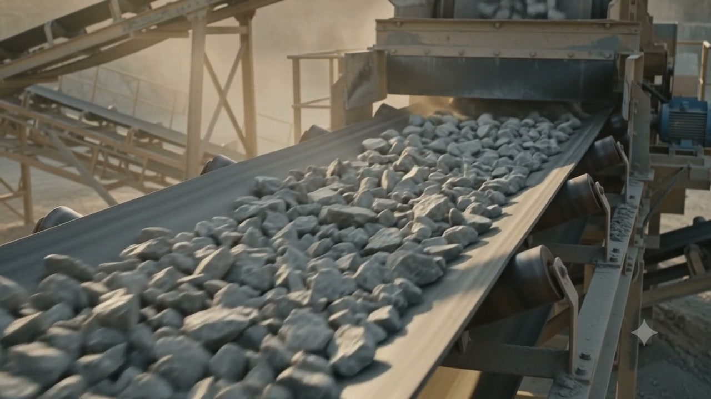

A / 01
Foundation
Editorial · Mineral · Institutional credibility
The association as a credible institution. A documentary, mineral-roots design that treats the aggregates story like a printed brief: authoritative, measured, built to be trusted by industry, government, and members alike.
- Grid
- Fixed modular column grid, formal margins, ruled sections — the page reads like a well-set document.
- Type
- Serif display headlines, small-caps section labels, dense documentary body copy.
- Palette
- Stone and cement neutrals, deep graphite, a single oxide accent.
- Imagery
- The production journey as archival plates — captioned, framed, authoritative.
- Interaction
- Deliberate and quiet; hierarchy carries the page rather than motion.
- Highest institutional gravity — strongest fit for governance and regulatory audiences.
- Documentary treatment of the production footage.
- Calm, formal, low-friction reading experience.